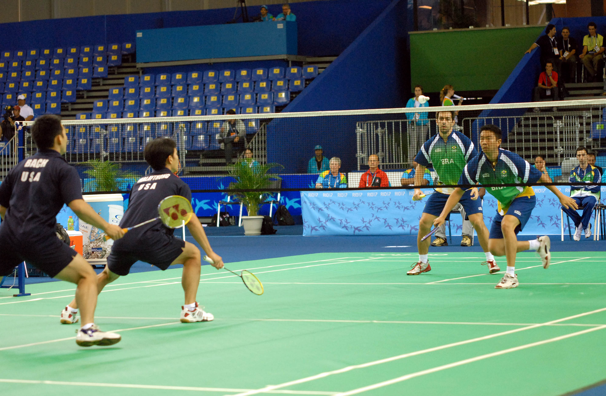

Vous voulez faire des sports?
Choissisez-vous entre les 3 au-dessous...
- Sports en salle
- Sports extérieurs ou Sports extrêmes
- Sports nautiques
Sports en salle
Bowling
Le bowling est une série d'activités sportives où un joueur fait rouler une boule de bowling vers une cible.l'objectif est de renverser des quilles au bout d'une voie. Plus vous renversez les broches, plus vous gagnez de points. Et aussi, si vous parvenez à obtenir un (strike), où vous réussissez à renverser toutes les quilles en un seul tour.
Volley-ball
Le volleyball est un type de sport joué entre deux équipes de six joueurs,chacune sur un court séparé par un filet. L'objectif est de marquer des points en faisant échouer une balle sur le terrain de l'adversaire.Il est joué par vos mains ou vos bras, mais les joueurs peuvent légalement frapper ou pousser le volleyball avec n'importe quelle partie de leur corps.

Badminton
Le badminton est un sport de raquette,pratiqué par deux joueurs individuels ou entre deux équipes de deux joueurs dans un court séparé par un filet.Pour obtenir un point vous devez frapper le volant de badminton afin qu'il arrive sur le terrain de l'adversaire.

Football en salle (Futsal)
Futsal ou football en salle est simplement le football mais il est joué par deux équipes de 5 jouers dans un champ qui est plus petit.
Tennis de table
Tennis de table ou bien (ping pong) est un sports qui est joué par 2 jouers individuels ou 2 équipes de 2 jouers en frappant une balle légère en faisant la navette sur la table de ping-pong, qui est divisée par un filet à l'aide d'une raquette de tennis de table.
Basket-ball
Basket-ball est un sport joué par 2 équipes de 5 jouers chacun sur un cour rectangulaire. L'objectif est de lancer la balle dans un cerceau de 18 pouces monté à 10 pieds au-dessus du sol, attaché à un panneau arrière à chaque extrémité du cour.
Sports extérieurs ou Sports extrêmes
Escalade
C'est assez accessible parce que les salles d'escalade sont devenues une chose tellement importante,donc vous pouvez s'entraîner tout d'abord avant d'aller à la montagne.Vous devez renforcer le haut du corps, le tronc et les doigts,pour eviter de se blesser.
Natation en eau libre
La natation peut être faire aussi dans une piscine,mais si vous voulez essayer ce type de natation,qui est plus dur, il faut que vous vous entraîniez les parties les plus difficiles de la natation en eau libre. Ce sont l'adaptation à un programme d'entraînement intensif et le respect de votre protocole de sécurité.
Ski
Ski est un sport qui est agréable pendant l'hiver. Voyager rapidement, souvent en montée, en utilisant à la fois vos bras et vos jambes, en fait un véritable entraînement pour tout le corps. la faible capacité en o2 à haute altitude affectera votre respiration et éventuellement votre conscience. Il est recommandé de renforcer votre endurance et votre respiration avant d'essayer de pratiquer ce sport.
Ultra-course à pied
L'ultra-course est connue pour brûler le plus de calories.Les joueurs doivent être très actifs et experts.Sinon,ils ne dureront même pas longtemps ni même passeront le premier tour car ce sport prend beaucoup de temps et d'énergie pour faire de vous un coureur expert. Vous devez pratiquer pendant des heures continues pour que vous ne puissiez pas être fatigués car votre corps est déja entraîné.
Sports nautiques
Plongée (Snorkeling)
C'est la pratique de nager sur ou à travers un plan d'eau tout en étant équipé d'un masque de plongée, d'un tube respiratoire en forme appelé tuba et généralement des palmes de nage.C'est génial d'essayer si vous voulez explorer le monde marin de vos propres yeux. N'hesitez pas,lancez-vous.

Wakeboard
Le wakeboard a été développé à partir d'une combinaison de techniques de ski nautique, de snowboard et de surf.C'est un sport nautique dans lequel le cavalier, debout sur un wakeboard (une planche courte avec des fixations de pied), est remorqué derrière un bateau à moteur dans son sillage et surtout en haut de la crête afin d'effectuer des manœuvres aériennes.
Ski nautique
Le ski nautique est un sport nautique de surface dans lequel un individu est tiré derrière un bateau ou une installation de ski à câble au-dessus d'un plan d'eau, effleurant la surface avec deux skis ou un ski.C'est un sport un peu extrême,mais si vous êtes intéressés à essayer,vous devez avoir une force adéquate du haut et du bas du corps, une endurance musculaire et un bon équilibre.
Kayak
Le kayak est un sport nautique qui consiste à pagayer à l'aide d'une rame à deux pales et d'un petit bateau appelé kayak.C'est un sport polyvalent qui peut être pratiqué dans pratiquement n'importe quel plan d'eau. Vous pouvez aussi faire du kayak pendant le camping ou bien la pêche.